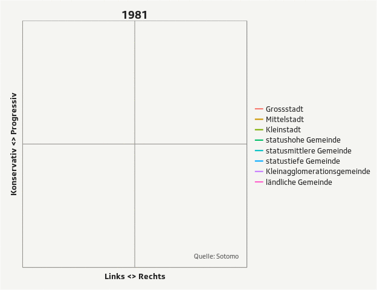

Zurich R User Group
Data journalism with R
Experiences at SRF Data
Timo Grossenbacher
Presentation available under grssnbchr.github.io/zrug-rddj
About me
Formerly: MSc in Geography & Computer Science UZH
Mar - Oct 2014: Tages-Anzeiger
Since Nov 2014 I work in the team of SRF Data as coder and journalist ("journocoder")

What the heck is data journalism?
Some examples

SRF Data

SRF Data
More: research & ideas, less: service center
pitch ideas, receive / collect / scrape / enforce (BGÖ) data
preprocess > visualize > analyze > find the story
publication on srf.ch -> overview, interactivity
publication in radio and/or TV -> anecdotes, details, aspects

Some examples of our work
Dual-use goods & conventional arms exports
The Zurich cantonal police orders a trojan horse
Covering of the Federal Elections 2015

What about R?
R is a Swiss Army Knife > it reads all kinds of weird s**t
R allows for automation > example
R empowers reproducibility and, ultimately, transparency > we publish most of our analyses on GitHub
I wrote a blog post about all of this

How do we use R?
R is a Swiss Army Knife > it reads all kinds of weird s**t
R allows for automation > example
R empowers reproducibility and, ultimately, transparency > we publish most of our analyses on GitHub
How exactly do we use R?
base, dplyr, tidyr, maggritr, ggplot2, extrafont, animation, readxl, xml2, jsonlite, RSQLite, googlesheets, stringr, rpremraj/mailR, R2HTML, knitr, slidify, readr, caret, sp, maptools, etc.
Things I still don't like about R
Error reporting in RStudio - in general, the console in RStudio
JSON
The plethora of packages doesn't make it better (jsonlite, rjson, RJSONIO). You still need to use list() and complicated lapply() calls to produce nested data structures - and JSON is all about nested data structures.
What about something like that?
my_dataset %>% group_by(facet) %>% to_json("output.json")
The language... especially Standard Evaluation vs. Non-Standard Evaluation ... and stuff like paste() or paste0().
direct_matches %<>% mutate_(.dots =
setNames(
list(
interp(~ as.numeric(sub("\\D*(\\d+).*",
"\\1", a)),
a = as.name(combined))),
combined
)
)
Some resources
rddj.info - a resource collection for doing DDJ with R
Thank you!
Questions?
@grssnbchr or timo.grossenbacher(at)srf.ch
This presentation is available (and reproducible) under github.com/grssnbchr/zrug-rddj